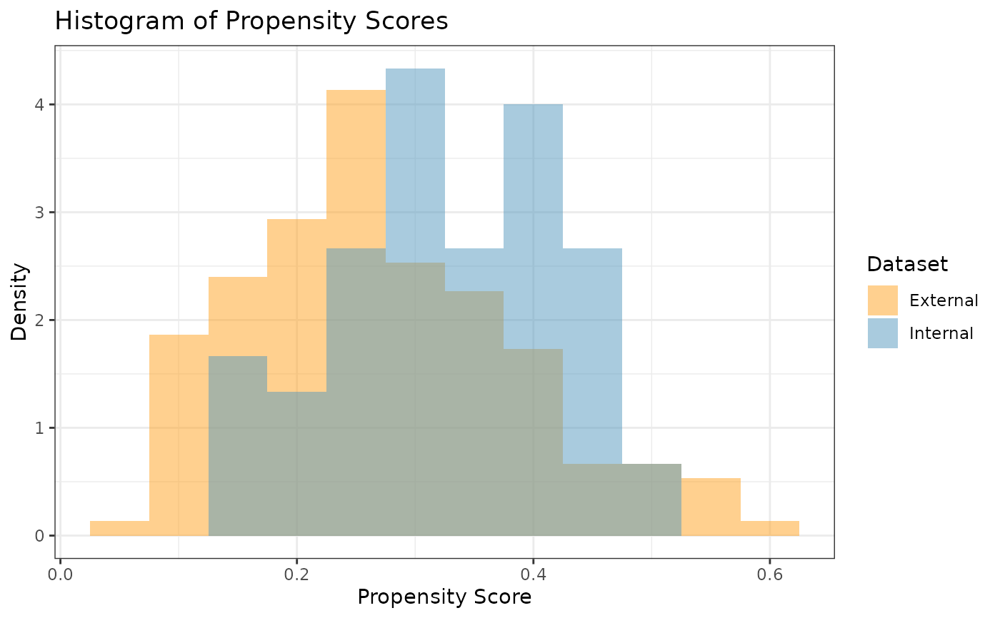
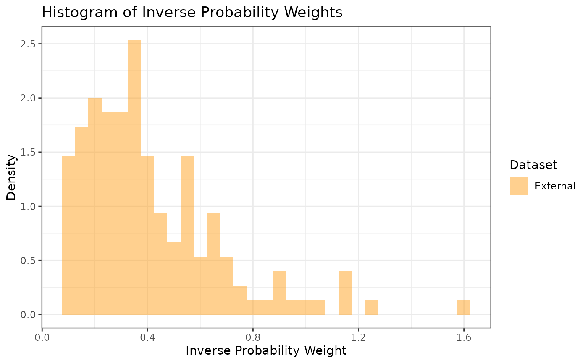

Plot overlapping histograms of the propensity scores for both the internal and external participants, or plot external IPWs.
Usage
prop_scr_hist(
x,
variable = c("propensity score", "ps", "inverse probability weight", "ipw"),
...
)Examples
library(dplyr)
ps_obj <- calc_prop_scr(internal_df = filter(int_norm_df, trt == 0),
external_df = ex_norm_df,
id_col = subjid,
model = ~ cov1 + cov2 + cov3 + cov4)
# Plotting the Propensity Scores
prop_scr_hist(ps_obj)

# Or plotting the inverse probability weights
prop_scr_hist(ps_obj, variable = "ipw")
